CODING AGENTS AS PIXEL WORLD MODELS
traex/GPT-6.1-Sol · common50_0048
点击播放 · 原生 RGB 像素
逐轮保存的候选
回放视频、检查图与代码变化。
每份候选均可单独播放。实际图片检查记录在下方工具轨迹中。
候选 01播放与检查图
点击播放 · 原生 RGB 像素

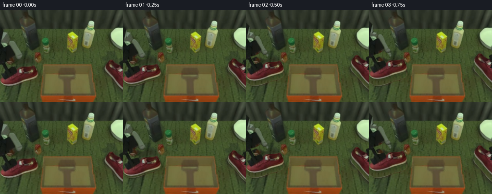
展开代码变化
--- 上一保存版本
+++ 本次保存版本
@@ -0,0 +1,173 @@
+from pathlib import Path
+import math
+import numpy as np
+from PIL import Image, ImageDraw, ImageFilter
+import artifact_io
+
+ROOT = Path(__file__).resolve().parent
+W,H=256,192
+S=3
+src=Image.open(ROOT/'first_frame.png').convert('RGB')
+a=np.asarray(src)
+CW,CH=336,240
+
+def maskpoly(points,size=(CW,CH), blur=.35):
+ m=Image.new('L',(size[0]*S,size[1]*S));ImageDraw.Draw(m).polygon([(round(x*S),round(y*S)) for x,y in points],fill=255)
+ m=m.resize(size,Image.Resampling.LANCZOS)
+ return m.filter(ImageFilter.GaussianBlur(blur)) if blur else m
+
+def extract(points):
+ out=Image.new('RGBA',(CW,CH));out.paste(src,(0,0));out.putalpha(maskpoly(points));return out
+
+left_outline=[(0,142),(4,138),(11,136),(23,131),(34,127),(38,122),(41,119),(51,119),(62,117.5),(69,115.5),(73,117.5),(75,122),(77,127),(78,131),(79,135),(77,140),(71,143.5),(56,147.5),(42,152),(29,156),(18,158),(10,157.5),(4,154),(0,150)]
+left=extract(left_outline)
+# Restore the portion of the upper hidden underneath the original grasp.
+cover=maskpoly([(1,142),(8,145),(20,141),(33,134),(38,128),(34,121),(25,126),(15,131),(7,136)],blur=.65)
+rest=Image.new('RGBA',(CW,CH));rr=np.zeros((CH,CW,4),dtype=np.uint8)
+for y in range(119,149):
+ for x in range(0,40):
+ # Sample the real leather, retaining small variations and the scene's soft lighting.
+ xx=int(np.clip(x+26,33,59));yy=int(np.clip(y+6,136,146))
+ color=a[yy,xx,:].astype(float)
+ shade=.89+0.10*(y-119)/30
+ rr[y,x,:3]=np.clip(color*shade,0,255);rr[y,x,3]=255
+rest=Image.fromarray(rr)
+left=Image.composite(rest,left,cover)
+# Keep the original outer silhouette, including the white sole.
+left.putalpha(maskpoly(left_outline))
+d=ImageDraw.Draw(left)
+for x,y in [(24,132),(28,130),(32,128)]:
+ d.line([(x-2,y-2),(x+3,y+3)],fill=(107,48,48,210),width=1)
+
+arm_outline=[(0,37),(7,44),(7,64),(17,65),(22,63),(27,66),(31,73),(34,81),(39,91),(45,98),(45,101),(40,104),(34,102),(29,96),(25,88),(30,99),(21,104),(11,107),(8,107),(20,123),(28,120),(33,119),(36,122),(36,130),(32,135),(24,138),(10,145),(5,146),(0,142),(0,128),(3,126),(0,114),(0,106)]
+leftarm=extract(arm_outline)
+
+# Transform an RGBA source about its object coordinate system.
+def mat(center,target,angle=0,scale=1):
+ r=math.radians(angle);c=math.cos(r)*scale;s=math.sin(r)*scale
+ M=np.array([[c,-s,target[0]-c*center[0]+s*center[1]],[s,c,target[1]-s*center[0]-c*center[1]],[0,0,1.]])
+ return M
+
+def warp(im,M,size=(W,H)):
+ inv=np.linalg.inv(M)
+ return im.transform(size,Image.Transform.AFFINE,tuple(inv[:2,:].reshape(-1)),Image.Resampling.BICUBIC)
+
+def point(M,p):return tuple((M@np.array([p[0],p[1],1]))[:2])
+
+# The far toe of the second shoe begins outside the view. Reconstruct only
+# that unseen continuation with leather and sole pixels from the visible mate.
+Rinit=mat((67,127),(230,116),-110,1.08)
+right=warp(left,Rinit,(CW,CH))
+right_outline=[(218,118),(219,114),(222,109),(225,106),(229,104),(233,104.5),(237,108),(241,112),(246,115),(251,116.5),(256,121),(256,166),(249,159),(241,150),(232,140),(225,132),(220,126)]
+actual=extract(right_outline)
+# Only the unseen end is borrowed; all initially visible pixels are original.
+ra=np.array(right);aa=np.array(actual)
+ra[:,:256]=aa[:,:256]
+right=Image.fromarray(ra)
+# Synthetic right rigid gripper: its original visible dark pad is retained.
+rightarm=Image.new('RGBA',(CW,CH));d=ImageDraw.Draw(rightarm)
+d.polygon([(250,110),(268,101),(281,109),(270,124),(254,126)],fill=(19,26,20,255))
+d.polygon([(259,117),(263,119),(261,133),(256,136),(252,133),(255,128)],fill=(16,22,17,255))
+d.polygon([(271,115),(276,117),(272,130),(267,133),(264,131)],fill=(24,30,23,255))
+d.polygon([(263,98),(278,93),(286,105),(273,114)],fill=(67,77,65,255))
+d.line([(265,98),(277,95),(282,103)],fill=(103,115,93,255),width=2)
+# Overwrite the visible start with actual arm pixels.
+rvis=extract([(250,109),(256,106),(256,126),(252,122)])
+rightarm.alpha_composite(rvis)
+
+# Reconstruct the table only in regions vacated by the source objects.
+remove=Image.new('L',(W,H))
+for poly in [left_outline,arm_outline,right_outline,[(250,108),(256,104),(256,131),(250,126)]]:
+ remove=Image.fromarray(np.maximum(np.array(remove),np.array(maskpoly(poly,(W,H),.75))))
+# Green, unoccupied parts of the same board supply the texture; no resources
+# besides the initial image are used.
+texture=np.array(a).copy()
+for y in range(H):
+ for x in range(W):
+ if np.array(remove)[y,x] == 0:continue
+ if y<38:
+ sx=110+(x%30); sy=y
+ elif y<113:
+ sx=101+(x%34);sy=y
+ else:
+ sx=202+(x%13);sy=y
+ texture[y,x]=a[sy,sx]
+clean=Image.composite(Image.fromarray(texture),src,remove)
+# The little reddish carton partly hidden by the initial arm stays fixed.
+keep=maskpoly([(13,101),(21,97),(27,101),(28,107),(23,112),(16,113),(12,110)],(W,H),.6)
+clean=Image.composite(src,clean,keep)
+# Box front and rim are foreground geometry relative to lowered contents.
+frontmask=maskpoly([(85,176),(198,176),(199,181),(194,192),(87,192),(84,181)],(W,H),.3)
+front=src.convert('RGBA');front.putalpha(frontmask)
+
+# Render simple articulated, rigid metallic links, connected to the original
+# textured wrist assemblies. Rounded pin bearings have stable dimensions.
+def rod(draw,A,B,width,body,highlight):
+ A=np.array(A,float);B=np.array(B,float);v=B-A;length=np.linalg.norm(v)
+ if length<1:return
+ n=np.array([-v[1],v[0]])/length
+ poly=[A+n*width/2,B+n*width/2,B-n*width/2,A-n*width/2]
+ draw.polygon([tuple(p*S) for p in poly],fill=body)
+ poly2=[A+n*width*.15,B+n*width*.15,B+n*width*.41,A+n*width*.41]
+ draw.polygon([tuple(p*S) for p in poly2],fill=highlight)
+ draw.line([tuple((A-n*width/2)*S),tuple((B-n*width/2)*S)],fill=(12,18,14,255),width=2*S)
+
+def links(canvas,M,side,amount):
+ # A two-link joint chain enters from outside the fixed camera's field.
+ anchor=point(M,(5,55) if side=='left' else (274,101))
+ if side=='left':
+ base=(-31,23); elbow=(-19+16*amount,66+16*amount)
+ else:
+ base=(292,29);elbow=(285-19*amount,63+5*amount)
+ layer=Image.new('RGBA',(W*S,H*S));dd=ImageDraw.Draw(layer)
+ rod(dd,base,elbow,17,(39,48,38,255),(80,91,72,255))
+ rod(dd,elbow,anchor,13,(26,34,27,255),(60,72,57,255))
+ for p in [elbow]:
+ x,y=p;dd.ellipse(((x-8)*S,(y-8)*S,(x+8)*S,(y+8)*S),fill=(68,79,63,255),outline=(25,33,26,255),width=2*S)
+ dd.ellipse(((x-3)*S,(y-3)*S,(x+3)*S,(y+3)*S),fill=(26,34,27,255))
+ canvas.alpha_composite(layer.resize((W,H),Image.Resampling.LANCZOS))
+
+# Smooth pick, transport, lower, release, and withdraw trajectories.
+def smooth(t):t=max(0,min(1,t));return t*t*(3-2*t)
+
+def pose(f,which):
+ start=np.array((40,138) if which=='left' else (255,143),float)
+ end=np.array((118,150) if which=='left' else (163,150),float)
+ ang=-73 if which=='left' else 42
+ scale=.79 if which=='left' else .74
+ if f<=3:
+ lift=14*smooth(f/3);dest=start+np.array([0,-lift]);r=0;sc=1
+ elif f<=10:
+ t=smooth((f-3)/7);dest=start*(1-t)+end*t+np.array([0,-14-7*math.sin(math.pi*t)]);r=ang*t;sc=1+(scale-1)*t
+ elif f<=13:
+ t=smooth((f-10)/3);dest=end+np.array([0,-14*(1-t)]);r=ang;sc=scale
+ else:dest=end;r=ang;sc=scale
+ return mat(start,dest,r,sc),dest
+
+def shadow(canvas,shoe,M,f):
+ sm=warp(shoe,M).getchannel('A')
+ offset=2+int(6*math.sin(math.pi*min(f,13)/13))
+ sh=Image.new('L',(W,H));sh.paste(sm,(2,offset));sh=sh.filter(ImageFilter.GaussianBlur(2.2))
+ sh=sh.point(lambda x:int(x*.22))
+ dark=Image.new('RGBA',(W,H),(10,16,7,0));dark.putalpha(sh);canvas.alpha_composite(dark)
+
+frames=[np.array(src)]
+for f in range(1,20):
+ im=clean.convert('RGBA')
+ ml,dl=pose(f,'left');mr,dr=pose(f,'right')
+ shadow(im,left,ml,f);shadow(im,right,mr,f)
+ im.alpha_composite(warp(left,ml));im.alpha_composite(warp(right,mr))
+ al=ml.copy();ar=mr.copy()
+ if f>=14:
+ t=smooth((f-13)/5)
+ # Release, lift clear of both shoes, then retreat outward.
+ al[0,2]-=95*t;al[1,2]-=40*math.sin(t*math.pi/2)
+ ar[0,2]+=91*t;ar[1,2]-=43*math.sin(t*math.pi/2)
+ amt=smooth((min(f,13)-3)/7)
+ links(im,al,'left',amt);links(im,ar,'right',amt)
+ im.alpha_composite(warp(leftarm,al))
+ im.alpha_composite(warp(rightarm,ar))
+ im.alpha_composite(front)
+ frames.append(np.array(im.convert('RGB')))
+frames=np.stack(frames).astype(np.uint8)
+artifact_io.save(frames,ROOT)
候选 02播放与检查图
点击播放 · 原生 RGB 像素
展开代码变化
--- 上一保存版本
+++ 本次保存版本
@@ -79,6 +79,7 @@
remove=Image.new('L',(W,H))
for poly in [left_outline,arm_outline,right_outline,[(250,108),(256,104),(256,131),(250,126)]]:
remove=Image.fromarray(np.maximum(np.array(remove),np.array(maskpoly(poly,(W,H),.75))))
+remove=remove.filter(ImageFilter.MaxFilter(9)).filter(ImageFilter.GaussianBlur(1.15))
# Green, unoccupied parts of the same board supply the texture; no resources
# besides the initial image are used.
texture=np.array(a).copy()
@@ -96,6 +97,15 @@
# The little reddish carton partly hidden by the initial arm stays fixed.
keep=maskpoly([(13,101),(21,97),(27,101),(28,107),(23,112),(16,113),(12,110)],(W,H),.6)
clean=Image.composite(src,clean,keep)
+# Clean the initial stationary grasp shadow out of the open cardboard tray.
+boxshade=maskpoly([(122,122),(127,120),(153,120),(157,126),(157,140),(149,146),(149,175),(130,175),(131,145),(122,140)],(W,H),2.5)
+boxfill=np.array(clean).copy()
+for y in range(114,177):
+ for x in range(118,163):
+ q=(x-110)/60
+ c=a[y,109:114].mean(axis=0)*(1-q)+a[y,166:171].mean(axis=0)*q
+ boxfill[y,x]=np.clip(c,0,255)
+clean=Image.composite(Image.fromarray(boxfill),clean,boxshade)
# Box front and rim are foreground geometry relative to lowered contents.
frontmask=maskpoly([(85,176),(198,176),(199,181),(194,192),(87,192),(84,181)],(W,H),.3)
front=src.convert('RGBA');front.putalpha(frontmask)
候选 03播放与检查图

候选 04播放与检查图
点击播放 · 原生 RGB 像素
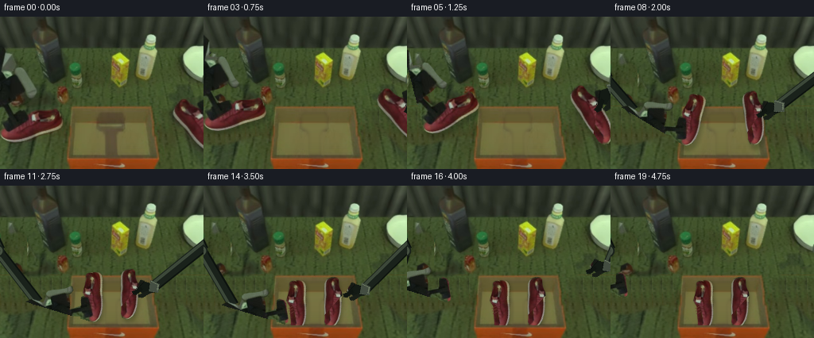
展开代码变化
--- 上一保存版本
+++ 本次保存版本
@@ -79,6 +79,8 @@
remove=Image.new('L',(W,H))
for poly in [left_outline,arm_outline,right_outline,[(250,108),(256,104),(256,131),(250,126)]]:
remove=Image.fromarray(np.maximum(np.array(remove),np.array(maskpoly(poly,(W,H),.75))))
+extra=maskpoly([(0,37),(12,42),(13,61),(26,60),(34,69),(41,88),(48,97),(49,107),(28,110),(0,115)],(W,H),.5)
+remove=Image.fromarray(np.maximum(np.array(remove),np.array(extra)))
remove=remove.filter(ImageFilter.MaxFilter(9)).filter(ImageFilter.GaussianBlur(1.15))
# Green, unoccupied parts of the same board supply the texture; no resources
# besides the initial image are used.
@@ -171,8 +173,8 @@
if f>=14:
t=smooth((f-13)/5)
# Release, lift clear of both shoes, then retreat outward.
- al[0,2]-=95*t;al[1,2]-=40*math.sin(t*math.pi/2)
- ar[0,2]+=91*t;ar[1,2]-=43*math.sin(t*math.pi/2)
+ al[0,2]-=145*t;al[1,2]-=40*math.sin(t*math.pi/2)
+ ar[0,2]+=140*t;ar[1,2]-=43*math.sin(t*math.pi/2)
amt=smooth((min(f,13)-3)/7)
links(im,al,'left',amt);links(im,ar,'right',amt)
im.alpha_composite(warp(leftarm,al))
候选 05播放与检查图
候选 06播放与检查图
点击播放 · 原生 RGB 像素
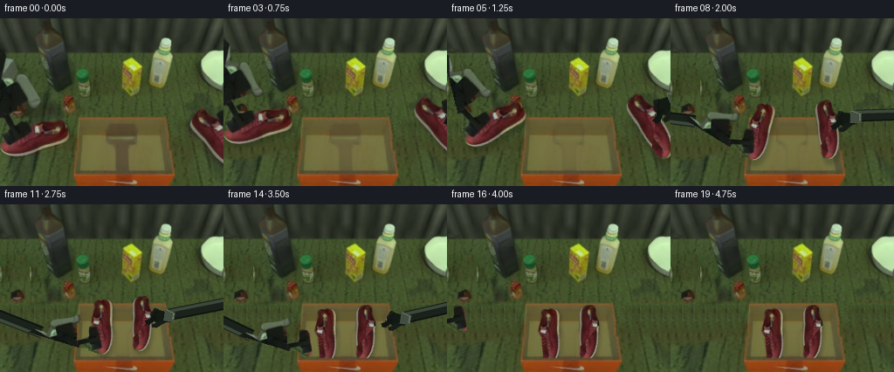
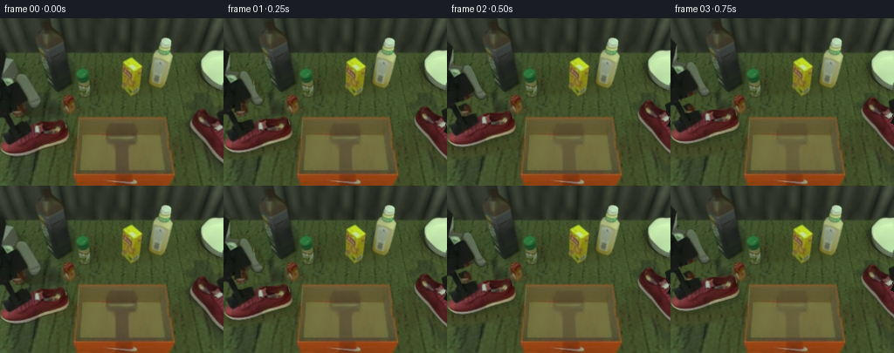
展开代码变化
--- 上一保存版本
+++ 本次保存版本
@@ -128,9 +128,13 @@
# A two-link joint chain enters from outside the fixed camera's field.
anchor=point(M,(5,55) if side=='left' else (274,101))
if side=='left':
- base=(-31,23); elbow=(-19+16*amount,66+16*amount)
+ base=(-31,23); lengths=(90.,95.); sign=1
else:
- base=(292,29);elbow=(285-19*amount,63+5*amount)
+ base=(292,29); lengths=(80.,90.); sign=-1
+ v=np.array(anchor)-np.array(base);dist=np.linalg.norm(v);unit=v/max(dist,1e-5)
+ L1,L2=lengths; along=(dist*dist+L1*L1-L2*L2)/(2*max(dist,1e-5))
+ height=math.sqrt(max(0,L1*L1-along*along))
+ elbow=np.array(base)+unit*along+sign*np.array([-unit[1],unit[0]])*height
layer=Image.new('RGBA',(W*S,H*S));dd=ImageDraw.Draw(layer)
rod(dd,base,elbow,17,(39,48,38,255),(80,91,72,255))
rod(dd,elbow,anchor,13,(26,34,27,255),(60,72,57,255))
@@ -166,6 +170,10 @@
frames=[np.array(src)]
for f in range(1,20):
im=clean.convert('RGBA')
+ if f<6:
+ # The initial arm shadow lightens continuously during the upward pick.
+ fade=boxshade.point(lambda v:int(v*max(0,1-f/6)))
+ old=src.convert('RGBA');old.putalpha(fade);im.alpha_composite(old)
ml,dl=pose(f,'left');mr,dr=pose(f,'right')
shadow(im,left,ml,f);shadow(im,right,mr,f)
im.alpha_composite(warp(left,ml));im.alpha_composite(warp(right,mr))
可观测工具轨迹
实际执行的命令与返回图片。
命令 1exit 0
/bin/bash -lc 'ls -la && cat prompt.txt && cat GENERATION_RULES.md'
命令 2exit 0
/bin/bash -lc "cat task_spec.json && cat artifact_io.py && python - <<'PY'
from PIL import Image
im=Image.open('first_frame.png');im.resize((1024,768)).save('.tmp/first_large.png')
PY"命令 3exit 0
/bin/bash -lc "python - <<'PY'
from PIL import Image
im=Image.open('first_frame.png'); im.crop((0,35,85,162)).resize((510,762)).save('.tmp/left.png');im.crop((206,95,256,175)).resize((300,480)).save('.tmp/right.png')
PY"命令 4exit 0
/bin/bash -lc "python - <<'PY'
from PIL import Image, ImageDraw
im=Image.open('first_frame.png').resize((1024,768)); d=ImageDraw.Draw(im)
for x in range(0,256,10):
d.line((x*4,0,x*4,768),fill=(200,200,200),width=1);d.text((x*4,0),str(x),fill='white')
for y in range(0,192,10):
d.line((0,y*4,1024,y*4),fill=(200,200,200),width=1);d.text((0,y*4),str(y),fill='white')
im.save('.tmp/grid.png')
PY"命令 5exit 0
/bin/bash -lc "cat > generate.py <<'PY'
from pathlib import Path
import math
import numpy as np
from PIL import Image, ImageDraw, ImageFilter
import artifact_io
ROOT = Path(__file__).resolve().parent
W,H=256,192
S=3
src=Image.open(ROOT/'first_frame.png').convert('RGB')
a=np.asarray(src)
CW,CH=336,240
def maskpoly(points,size=(CW,CH), blur=.35):
m=Image.new('L',(size[0]*S,size[1]*S));ImageDraw.Draw(m).polygon([(round(x*S),round(y*S)) for x,y in points],fill=255)
m=m.resize(size,Image.Resampling.LANCZOS)
return m.filter(ImageFilter.GaussianBlur(blur)) if blur else m
def extract(points):
out=Image.new('RGBA',(CW,CH));out.paste(src,(0,0));out.putalpha(maskpoly(points));return out
left_outline=[(0,142),(4,138),(11,136),(23,131),(34,127),(38,122),(41,119),(51,119),(62,117.5),(69,115.5),(73,117.5),(75,122),(77,127),(78,131),(79,135),(77,140),(71,143.5),(56,147.5),(42,152),(29,156),(18,158),(10,157.5),(4,154),(0,150)]
left=extract(left_outline)
# Restore the portion of the upper hidden underneath the original grasp.
cover=maskpoly([(1,142),(8,145),(20,141),(33,134),(38,128),(34,121),(25,126),(15,131),(7,136)],blur=.65)
rest=Image.new('RGBA',(CW,CH));rr=np.zeros((CH,CW,4),dtype=np.uint8)
for y in range(119,149):
for x in range(0,40):
# Sample the real leather, retaining small variations and the scene's soft lighting.
xx=int(np.clip(x+26,33,59));yy=int(np.clip(y+6,136,146))
color=a[yy,xx,:].astype(float)
shade=.89+0.10*(y-119)/30
rr[y,x,:3]=np.clip(color*shade,0,255);rr[y,x,3]=255
rest=Image.fromarray(rr)
left=Image.composite(rest,left,cover)
# Keep the original outer silhouette, including the white sole.
left.putalpha(maskpoly(left_outline))
d=ImageDraw.Draw(left)
for x,y in [(24,132),(28,130),(32,128)]:
d.line([(x-2,y-2),(x+3,y+3)],fill=(107,48,48,210),width=1)
arm_outline=[(0,37),(7,44),(7,64),(17,65),(22,63),(27,66),(31,73),(34,81),(39,91),(45,98),(45,101),(40,104),(34,102),(29,96),(25,88),(30,99),(21,104),(11,107),(8,107),(20,123),(28,120),(33,119),(36,122),(36,130),(32,135),(24,138),(10,145),(5,146),(0,142),(0,128),(3,126),(0,114),(0,106)]
leftarm=extract(arm_outline)
# Transform an RGBA source about its object coordinate system.
def mat(center,target,angle=0,scale=1):
r=math.radians(angle);c=math.cos(r)*scale;s=math.sin(r)*scale
M=np.array([[c,-s,target[0]-c*center[0]+s*center[1]],[s,c,target[1]-s*center[0]-c*center[1]],[0,0,1.]])
return M
def warp(im,M,size=(W,H)):
inv=np.linalg.inv(M)
return im.transform(size,Image.Transform.AFFINE,tuple(inv[:2,:].reshape(-1)),Image.Resampling.BICUBIC)
def point(M,p):return tuple((M@np.array([p[0],p[1],1]))[:2])
# The far toe of the second shoe begins outside the view. Reconstruct only
# that unseen continuation with leather and sole pixels from the visible mate.
Rinit=mat((67,127),(230,116),-110,1.08)
right=warp(left,Rinit,(CW,CH))
right_outline=[(218,118),(219,114),(222,109),(225,106),(229,104),(233,104.5),(237,108),(241,112),(246,115),(251,116.5),(256,121),(256,166),(249,159),(241,150),(232,140),(225,132),(220,126)]
actual=extract(right_outline)
# Only the unseen end is borrowed; all initially visible pixels are original.
ra=np.array(right);aa=np.array(actual)
ra[:,:256]=aa[:,:256]
right=Image.fromarray(ra)
# Synthetic right rigid gripper: its original visible dark pad is retained.
rightarm=Image.new('RGBA',(CW,CH));d=ImageDraw.Draw(rightarm)
d.polygon([(250,110),(268,101),(281,109),(270,124),(254,126)],fill=(19,26,20,255))
d.polygon([(259,117),(263,119),(261,133),(256,136),(252,133),(255,128)],fill=(16,22,17,255))
d.polygon([(271,115),(276,117),(272,130),(267,133),(264,131)],fill=(24,30,23,255))
d.polygon([(263,98),(278,93),(286,105),(273,114)],fill=(67,77,65,255))
d.line([(265,98),(277,95),(282,103)],fill=(103,115,93,255),width=2)
# Overwrite the visible start with actual arm pixels.
rvis=extract([(250,109),(256,106),(256,126),(252,122)])
rightarm.alpha_composite(rvis)
# Reconstruct the table only in regions vacated by the source objects.
remove=Image.new('L',(W,H))
for poly in [left_outline,arm_outline,right_outline,[(250,108),(256,104),(256,131),(250,126)]]:
remove=Image.fromarray(np.maximum(np.array(remove),np.array(maskpoly(poly,(W,H),.75))))
# Green, unoccupied parts of the same board supply the texture; no resources
# besides the initial image are used.
texture=np.array(a).copy()
for y in range(H):
for x in range(W):
if np.array(remove)[y,x] == 0:continue
if y<38:
sx=110+(x%30); sy=y
elif y<113:
sx=101+(x%34);sy=y
else:
sx=202+(x%13);sy=y
texture[y,x]=a[sy,sx]
clean=Image.composite(Image.fromarray(texture),src,remove)
# The little reddish carton partly hidden by the initial arm stays fixed.
keep=maskpoly([(13,101),(21,97),(27,101),(28,107),(23,112),(16,113),(12,110)],(W,H),.6)
clean=Image.composite(src,clean,keep)
# Box front and rim are foreground geometry relative to lowered contents.
frontmask=maskpoly([(85,176),(198,176),(199,181),(194,192),(87,192),(84,181)],(W,H),.3)
front=src.convert('RGBA');front.putalpha(frontmask)
# Render simple articulated, rigid metallic links, connected to the original
# textured wrist assemblies. Rounded pin bearings have stable dimensions.
def rod(draw,A,B,width,body,highlight):
A=np.array(A,float);B=np.array(B,float);v=B-A;length=np.linalg.norm(v)
if length<1:return
n=np.array([-v[1],v[0]])/length
poly=[A+n*width/2,B+n*width/2,B-n*width/2,A-n*width/2]
draw.polygon([tuple(p*S) for p in poly],fill=body)
poly2=[A+n*width*.15,B+n*width*.15,B+n*width*.41,A+n*width*.41]
draw.polygon([tuple(p*S) for p in poly2],fill=highlight)
draw.line([tuple((A-n*width/2)*S),tuple((B-n*width/2)*S)],fill=(12,18,14,255),width=2*S)
def links(canvas,M,side,amount):
# A two-link joint chain enters from outside the fixed camera's field.
anchor=point(M,(5,55) if side=='left' else (274,101))
if side=='left':
base=(-31,23); elbow=(-19+16*amount,66+16*amount)
else:
base=(292,29);elbow=(285-19*amount,63+5*amount)
layer=Image.new('RGBA',(W*S,H*S));dd=ImageDraw.Draw(layer)
rod(dd,base,elbow,17,(39,48,38,255),(80,91,72,255))
rod(dd,elbow,anchor,13,(26,34,27,255),(60,72,57,255))
for p in [elbow]:
x,y=p;dd.ellipse(((x-8)*S,(y-8)*S,(x+8)*S,(y+8)*S),fill=(68,79,63,255),outline=(25,33,26,255),width=2*S)
dd.ellipse(((x-3)*S,(y-3)*S,(x+3)*S,(y+3)*S),fill=(26,34,27,255))
canvas.alpha_composite(layer.resize((W,H),Image.Resampling.LANCZOS))
# Smooth pick, transport, lower, release, and withdraw trajectories.
def smooth(t):t=max(0,min(1,t));return t*t*(3-2*t)
def pose(f,which):
start=np.array((40,138) if which=='left' else (255,143),float)
end=np.array((118,150) if which=='left' else (163,150),float)
ang=-73 if which=='left' else 42
scale=.79 if which=='left' else .74
if f<=3:
lift=14*smooth(f/3);dest=start+np.array([0,-lift]);r=0;sc=1
elif f<=10:
t=smooth((f-3)/7);dest=start*(1-t)+end*t+np.array([0,-14-7*math.sin(math.pi*t)]);r=ang*t;sc=1+(scale-1)*t
elif f<=13:
t=smooth((f-10)/3);dest=end+np.array([0,-14*(1-t)]);r=ang;sc=scale
else:dest=end;r=ang;sc=scale
return mat(start,dest,r,sc),dest
def shadow(canvas,shoe,M,f):
sm=warp(shoe,M).getchannel('A')
offset=2+int(6*math.sin(math.pi*min(f,13)/13))
sh=Image.new('L',(W,H));sh.paste(sm,(2,offset));sh=sh.filter(ImageFilter.GaussianBlur(2.2))
sh=sh.point(lambda x:int(x*.22))
dark=Image.new('RGBA',(W,H),(10,16,7,0));dark.putalpha(sh);canvas.alpha_composite(dark)
frames=[np.array(src)]
for f in range(1,20):
im=clean.convert('RGBA')
ml,dl=pose(f,'left');mr,dr=pose(f,'right')
shadow(im,left,ml,f);shadow(im,right,mr,f)
im.alpha_composite(warp(left,ml));im.alpha_composite(warp(right,mr))
al=ml.copy();ar=mr.copy()
if f>=14:
t=smooth((f-13)/5)
# Release, lift clear of both shoes, then retreat outward.
al[0,2]-=95*t;al[1,2]-=40*math.sin(t*math.pi/2)
ar[0,2]+=91*t;ar[1,2]-=43*math.sin(t*math.pi/2)
amt=smooth((min(f,13)-3)/7)
links(im,al,'left',amt);links(im,ar,'right',amt)
im.alpha_composite(warp(leftarm,al))
im.alpha_composite(warp(rightarm,ar))
im.alpha_composite(front)
frames.append(np.array(im.convert('RGB')))
frames=np.stack(frames).astype(np.uint8)
artifact_io.save(frames,ROOT)
PY
python generate.py"命令 6exit 0
/bin/bash -lc "python - <<'PY'
from PIL import Image
for i in [1,3,10,19]:
Image.open(f'frames/{i:02}.png').resize((1024,768)).save(f'.tmp/f{i}.png')
PY"命令 7exit 0
/bin/bash -lc "python - <<'PY'
p='generate.py'
s=open(p).read();s=s.replace(\"# Green, unoccupied parts\", \"remove=remove.filter(ImageFilter.MaxFilter(9)).filter(ImageFilter.GaussianBlur(1.15))\\n# Green, unoccupied parts\")
s=s.replace(\"clean=Image.composite(src,clean,keep)\",\"\"\"clean=Image.composite(src,clean,keep)
# Clean the initial stationary grasp shadow out of the open cardboard tray.
boxshade=maskpoly([(122,122),(127,120),(153,120),(157,126),(157,140),(149,146),(149,175),(130,175),(131,145),(122,140)],(W,H),2.5)
boxfill=np.array(clean).copy()
for y in range(114,177):
for x in range(118,163):
q=(x-110)/60
c=a[y,109:114].mean(axis=0)*(1-q)+a[y,166:171].mean(axis=0)*q
boxfill[y,x]=np.clip(c,0,255)
clean=Image.composite(Image.fromarray(boxfill),clean,boxshade)\"\"\")
open(p,'w').write(s)
PY
python generate.py
python - <<'PY'
from PIL import Image
Image.open('frames/19.png').resize((1024,768)).save('.tmp/final.png')
PY"命令 8exit 0
/bin/bash -lc "python - <<'PY'
p='generate.py';s=open(p).read().replace(\"remove=remove.filter(ImageFilter.MaxFilter(9))\", \"extra=maskpoly([(0,37),(12,42),(13,61),(26,60),(34,69),(41,88),(48,97),(49,107),(28,110),(0,115)],(W,H),.5)\\nremove=Image.fromarray(np.maximum(np.array(remove),np.array(extra)))\\nremove=remove.filter(ImageFilter.MaxFilter(9))\")
s=s.replace('al[0,2]-=95*t','al[0,2]-=145*t').replace('ar[0,2]+=91*t','ar[0,2]+=140*t')
# Retain constant background at the onset until it becomes newly visible.
s=s.replace(\"im=clean.convert('RGBA')\", \"im=clean.convert('RGBA')\")
open(p,'w').write(s)
PY
python generate.py
which ffmpeg || true"命令 9exit 0
/bin/bash -lc "python - <<'PY'
p='generate.py';s=open(p).read();s=s.replace(\"base=(-31,23); elbow=(-19+16*amount,66+16*amount)\",\"base=(-31,23); lengths=(90.,95.); sign=1\")
s=s.replace(\"base=(292,29);elbow=(285-19*amount,63+5*amount)\",\"base=(292,29); lengths=(80.,90.); sign=-1\")
s=s.replace(\"layer=Image.new('RGBA',(W*S,H*S));dd=ImageDraw.Draw(layer)\",\"\"\"v=np.array(anchor)-np.array(base);dist=np.linalg.norm(v);unit=v/max(dist,1e-5)
L1,L2=lengths; along=(dist*dist+L1*L1-L2*L2)/(2*max(dist,1e-5))
height=math.sqrt(max(0,L1*L1-along*along))
elbow=np.array(base)+unit*along+sign*np.array([-unit[1],unit[0]])*height
layer=Image.new('RGBA',(W*S,H*S));dd=ImageDraw.Draw(layer)\"\"\")
s=s.replace(\"im=clean.convert('RGBA')\\n ml,dl\", \"\"\"im=clean.convert('RGBA')
if f<6:
# The initial arm shadow lightens continuously during the upward pick.
fade=boxshade.point(lambda v:int(v*max(0,1-f/6)))
old=src.convert('RGBA');old.putalpha(fade);im.alpha_composite(old)
ml,dl\"\"\")
open(p,'w').write(s)
PY
python generate.py
python - <<'PY'
import numpy as np
from PIL import Image
z=np.load('pixels.npz')['pixels']
first=(z[:,:,0,None]>>np.array([16,8,0]))&255
assert np.array_equal(first.astype('uint8'),np.array(Image.open('first_frame.png').convert('RGB')))
assert z.shape==(192,256,20)
print('Verified: 20 RGB frames, 256x192, frame 00 exact.')
PY"视觉工具实际返回图片 1
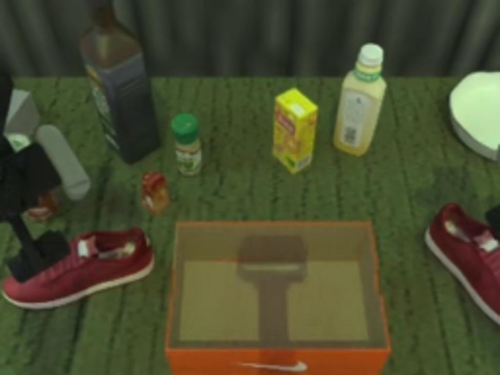
视觉工具实际返回图片 2
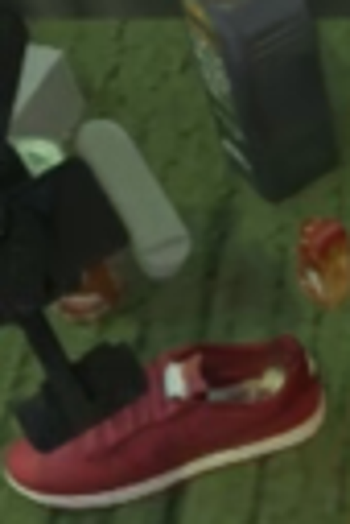
视觉工具实际返回图片 3
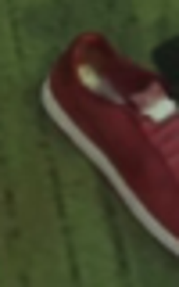
视觉工具实际返回图片 4
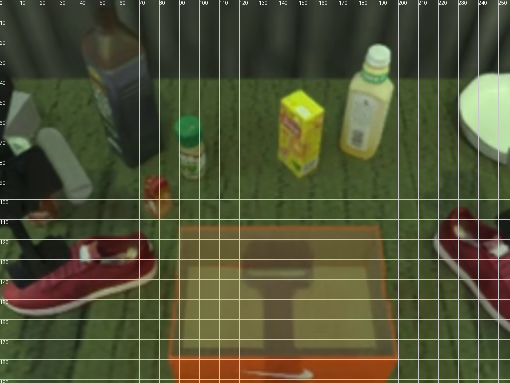
视觉工具实际返回图片 5
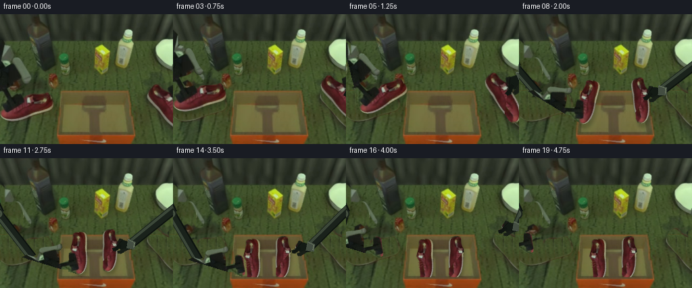
视觉工具实际返回图片 6
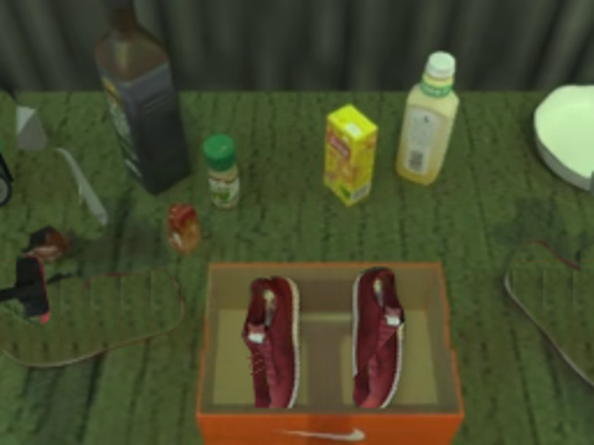
视觉工具实际返回图片 7
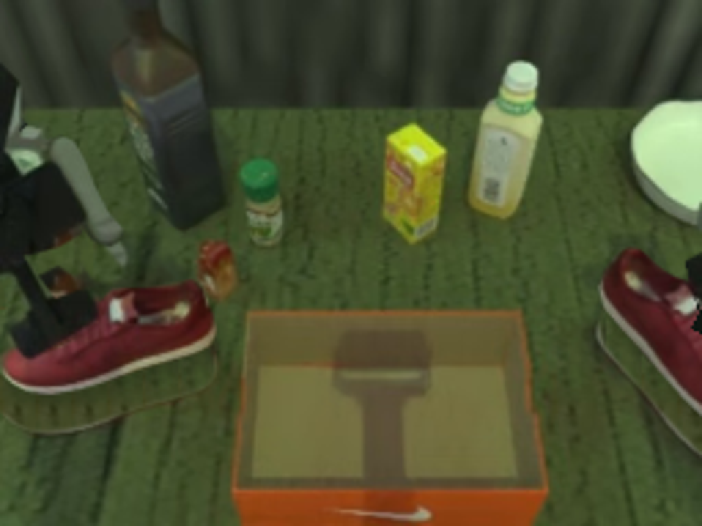
视觉工具实际返回图片 8
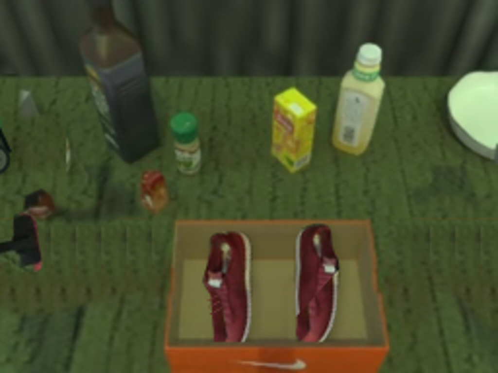
视觉工具实际返回图片 9
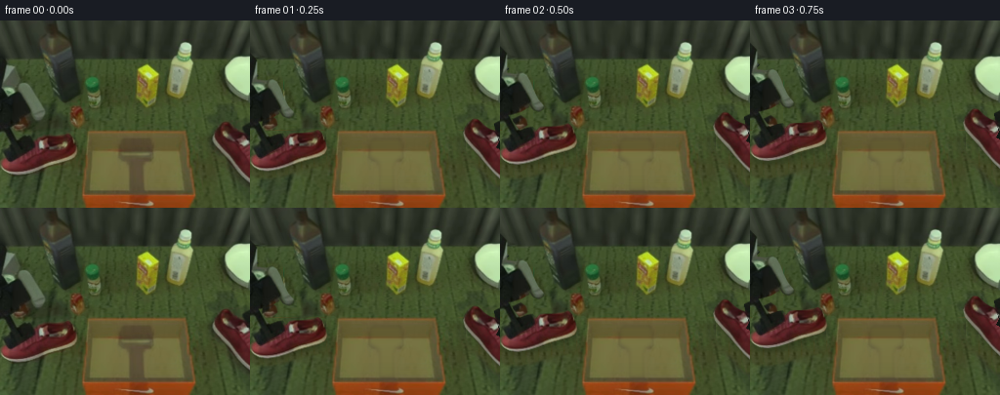
保存候选 6 份；完成命令 9 次；可验证图片返回 9 张。原始 API 响应与完整日志保留在本地。